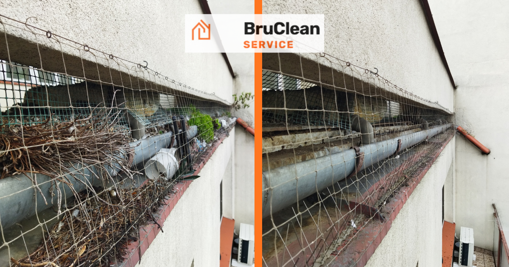

Czyszczenie rynien jesienią — dlaczego to najważniejszy termin w roku
Opublikowano: 25 sierpnia 2026 · BruClean Service Kraków

Liście spadające z drzew to dla rynien największe wyzwanie w roku. W Krakowie i Małopolsce sezon opadania liści zwykle nakłada się na pierwsze jesienne deszcze, więc rynny, które nie są na bieżąco czyszczone, potrafią zapchać się w ciągu kilku tygodni. Jesienne czyszczenie to nie kosmetyka — to zabezpieczenie budynku przed konkretnymi, kosztownymi problemami zimą.
Dlaczego jesień to najlepszy moment na czyszczenie rynien?
Rynny oczyszczone jesienią przechodzą przez zimę bez zalegających liści i błota, które zatrzymują wodę. To właśnie ta zalegająca woda, gdy zamarza, powoduje największe szkody — pęka rynny, odrywa mocowania i tworzy sople obciążające całą instalację. Czyszczenie wykonane przed pierwszymi mrozami to najprostszy sposób, by tego uniknąć.
Co się dzieje, gdy rynny nie są czyszczone przed zimą?
- Zamarzająca woda w zapchanych rynnach rozsadza je od środka
- Przeciążone liśćmi i lodem rynny odrywają się od mocowań
- Woda przelewająca się przez brzegi spływa po elewacji, powodując zacieki i przyspieszając jej niszczenie
- Wilgoć przenika w okolice fundamentów, jeśli rury spustowe są niedrożne
Jak często czyścić rynny?
Rekomendujemy czyszczenie rynien co najmniej raz w roku, jesienią — po opadnięciu większości liści, ale przed pierwszymi przymrozkami. Budynki otoczone drzewami liściastymi lub iglastymi (szpilki i szyszki zapychają równie skutecznie) często wymagają dodatkowego czyszczenia wiosną.
Siatki zabezpieczające przed liśćmi — czy warto?
Przy okazji czyszczenia często proponujemy montaż siatek zabezpieczających na rynny. Nie eliminują one konieczności czyszczenia całkowicie, ale znacząco ograniczają ilość materiału organicznego wpadającego do środka, co wydłuża odstępy między kolejnymi zabiegami i zmniejsza ryzyko nagłego zatoru w trakcie ulewnych jesiennych deszczy.
Zobacz też pełną ofertę czyszczenia i udrażniania rynien w Krakowie — zakres prac, montaż siatek i przykładowe realizacje.
Chcesz oczyścić rynny przed zimą, zanim zrobi się na to za późno?
Zapytaj o darmową wycenę